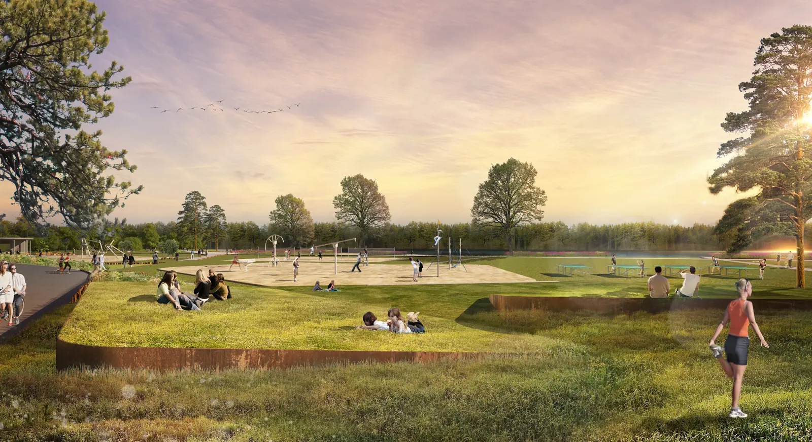
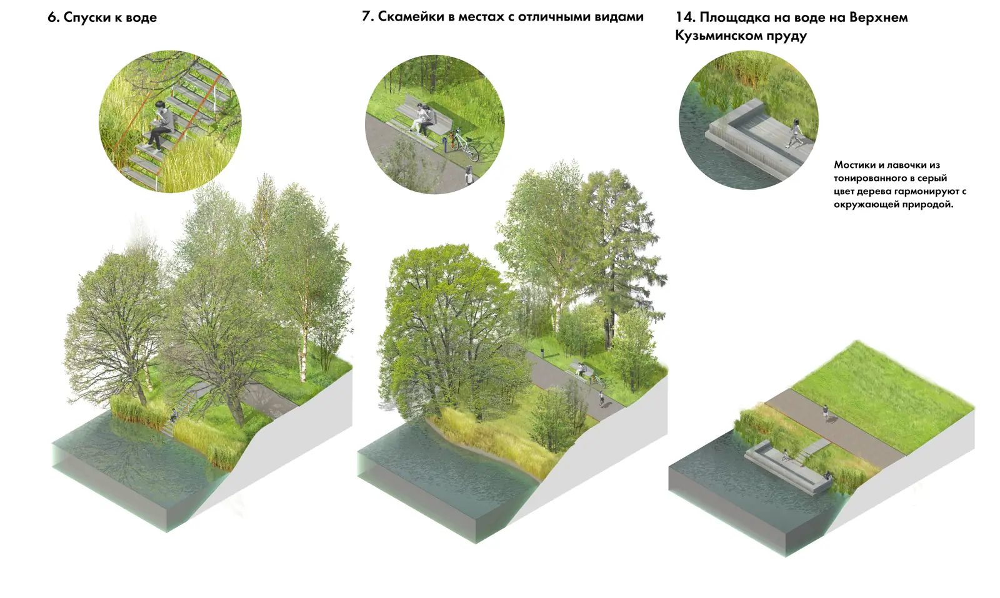
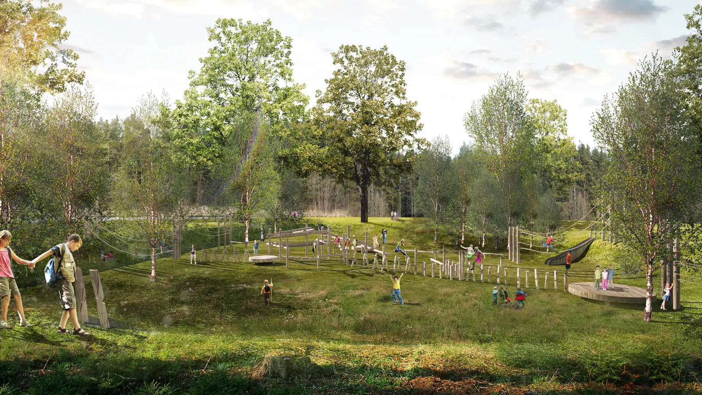
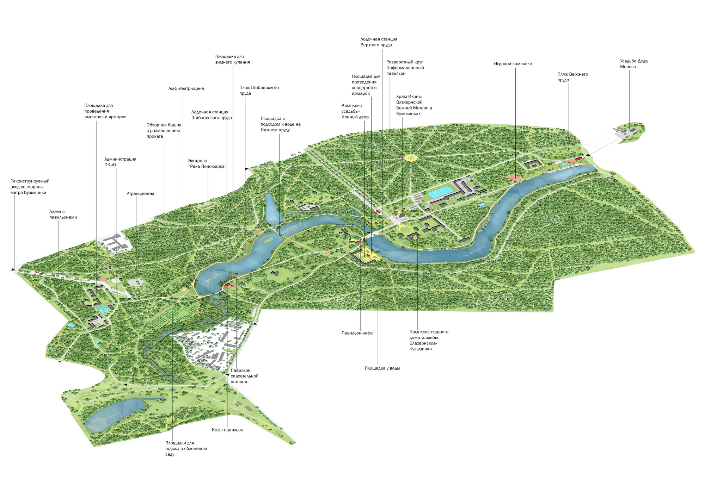

парк кузьминки
Концепция объединяет четыре разрозненные части парка — ПКиО, музейный комплекс усадьбы Голицыных, исторический пейзажный парк вокруг прудов и лес — с помощью ландшафтных решений вокруг прудов и реки Пономарки.
Пейзажный маршрут вдоль прудов — система незаметных точечных интервенций: спуски к воде, скамейки на видовых точках, площадка на воде на Верхнем Кузьминском пруду.
Центральная ось нанизывает три «сердца парка» — места с видами на воду, павильонами кафе, прокатом и детскими площадками.


чертежи и схемы
